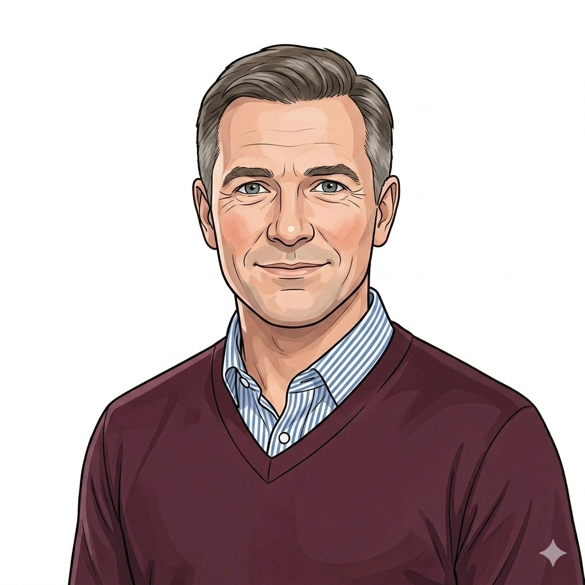
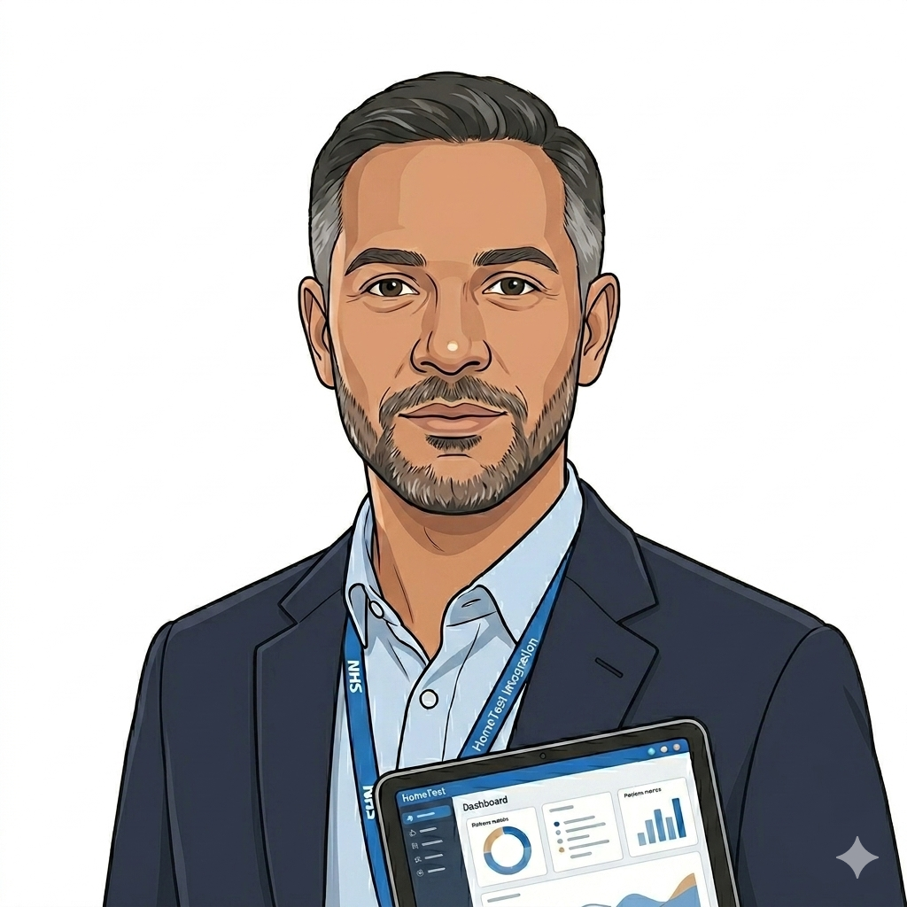
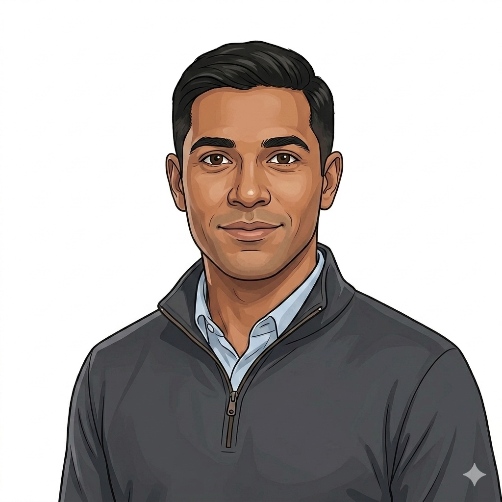

HomeTest Interim Commercial Playbook
NHSE convenes the system, assures supplier quality against a published standard, and introduces approved suppliers to commissioners. The contracts that follow sit between supplier and customer; NHSE is not a party and takes no percent. This is the interim commercial machinery, defensible while the portfolio scales. The framework conversation reopens at named triggers — portfolio approaching the scale where the take-rate materially earns its keep (working hypothesis around ten live tests), suppliers asking for the structure, NHSE Legal's position on the interim vehicle changing, or the FY27 planning horizon being reached.


Reference
About this playbook. North stars. Wider Playbook map (which other chapters sit alongside the commercial one). Glossary. Source artefacts. What's out of scope. Version log.

Set the direction
The end-to-end orchestrator for new use cases, plus the strategic and operating-direction calls underneath it — recipe routing, candidate-test prioritisation, pricing, framework administration choice, national tariff influence. Where commercial direction gets set for everything downstream.

Matchmaker
Where NHSE makes the introduction. Approved suppliers meet local commissioners (LA, ICB), acute NHS-to-NHS partners and national platform counterparties. The contract is theirs to sign; we stand outside the bilateral. Includes the symmetric commissioner exit / de-scope play.


Assurance wrapper
The approved-list discipline. Admission against a published standard, variation in life, Beta-to-BAU transition, performance management, dispute, and removal from the list. The teeth that make the matchmaker model defensible without a formal framework in place.
Orchestrator
The standing disciplines that hold the system together. External publication, business-case input, conflict-of-interest standing, response to external inquiry, and the assurance envelope and apparatus. These bite from inside every other play.
When to run this play Scaling
What this play does. Route a use case to its commercial recipe — the named pattern that decides which other plays run and in what order. There are three recipes; a use case can be a mix but must name a primary.
Run this play when:
- A new test, use case or pathway is being considered for HomeTest delivery and the commercial route to market needs picking.
- An existing use case is being re-evaluated and the recipe may need to shift.
- A partner programme (GIRFT, Elective, Cancer) brings a candidate forward and the recipe needs naming before any other play runs.
This play is a recipe-routing matrix, not a swim lane. Score the use case against the four recipes. The recipe that fits is the one that names the primary route through which value flows. A use case can have secondary recipes; the primary names the dominant downstream play set.
Recommendation
Open decisions inside this play
Recipe ownership. Who has authority to lock the recipe for a use case is not yet formal. Currently a programme-leadership call; needs a named owner per use case.
"No fit" outcome. The playbook currently assumes a recipe must be picked. Some candidate use cases genuinely don't fit any recipe — the right call is to refuse to proceed. The configurator should support an explicit "this isn't a HomeTest use case" outcome rather than forcing the reader to pick. Worked example: a use case where the patient activity is fundamentally hospital-bound (inpatient pathways) — none of A/B/C/D applies and HomeTest should signal "not in scope" rather than improvising a recipe.
Mixed-recipe governance. When a use case mixes recipes (Recipe A primary with Recipe B acute partnerships for specific sites), how the dependency between recipes is governed is not yet defined.
Recipe re-evaluation triggers. When an existing use case's recipe should be re-examined (volume growth, market change, partner-programme shift) needs an explicit rule.
Where HomeTest is on this play today
This play is in design. Recipes are implicit in current HomeTest work — Recipe A is in motion for HIV, Recipe B for PSA active surveillance, Recipe C under exploration. This play makes the choices explicit so a new use case is routed deliberately rather than by default.
When to run this play Scaling
What this play does. Score the current candidate pipeline and lock the next versioned list of tests (v1, v2, v3+) for onboarding, with rationale that stands up to SLT and external scrutiny.
Run this play when:
- The end of a prioritisation cycle has been reached and the next versioned test list (v1, v2, v3+) needs to be locked.
- A new candidate test surfaces and needs scoring against the current list to see if it displaces anything.
- A change in clinical standards, supplier readiness or strategic context warrants a re-score of an already-ranked test.
Three scoring rules
A test cannot enter the live v1 list unless the clinical assurance score reaches the defined standards threshold. Failing candidates carry forward as v1-pending. The gate is visible in every scoring run; the standards-work dependency is never hidden.
Default equal weighting across the six dimensions, with the chair able to apply cycle-specific weighting if a strategic shift warrants it. Weight changes are documented in the rationale.
Full cycle every quarter; on-trigger re-score whenever a candidate's standards status changes or a major strategic shift lands.
Scoring rubric — what each 1–5 score means
A score is only useful if two scorers looking at the same candidate would land within one point of each other. The rubric is the calibration anchor. Each dimension scored 1 (weak) to 5 (strong), with evidence reference attached.
5 >500k addressable patients/year, national reach. 3 50–500k, regional anchor. 1 <50k, niche cohort.
5 ≥2 onboarded suppliers, evidenced capacity. 3 one onboarded, second in pipeline. 1 no onboarded supplier; market would need building.
5 cash-releasing, capacity-releasing AND societal positive. 3 positive on one of three. 1 negative or unclear on all three.
5 named in active national programme commitment. 3 aligned to a published strategy without specific commitment. 1 no national vehicle currently carrying it.
5 re-uses an existing pathway end-to-end. 3 moderate platform build, well-understood. 1 material build, novel risk.
5 capillary non-inferiority + UKAS-accredited labs + device-classed. 3 two of three. 1 standards work not started. Below the threshold = standards gate fail.
Conflicts of interest in this play
Suppliers provide readiness input on candidates they could supply. That is a structural conflict: a supplier has an interest in scoring its own readiness up, and an interest in scoring rival candidates' readiness down. The mitigations:
- Supplier input does not score. Joe (supplier) provides factual readiness input — capacity, accreditation, integration, pricing posture — but does not assign the supplier-readiness score. David (Commercial) scores, with supplier input as one of several inputs.
- Supplier input is logged. Every supplier-provided readiness statement is logged with attribution, so the audit trail shows what was claimed by whom.
- Cross-check against independent sources. Supplier readiness claims are cross-checked against UKAS / ISO records, recent volumes if a contract exists, and a second-source supplier statement where available.
- Standing CoI declarations. Every chair-group member declares any commercial interest in any candidate or supplier before each scoring cycle. Declared interests trigger recusal from scoring that candidate — see the standing Conflict-of-Interest play (Cross-cutting) for the full register and recusal mechanics.
Open decisions inside this play
Default weight set. Equal weighting is the starting point. Whether strategic alignment or clinical assurance should carry a higher default weight is still to be agreed.
Standards thresholds. The pass / fail threshold on clinical assurance depends on the national standards work landing. Until that lands, the gate operates on the best-available evidence and flags every borderline as pending.
Sponsor sign-off route. Final v1 list lock is an SLT decision. The specific sign-off step (single senior sponsor vs SLT majority vs joint sign-off with partner programmes) is not yet confirmed.
Rubric calibration cycle. The 1–5 rubric needs a calibration run — two scorers independently scoring the same five candidates and reconciling — before it is treated as the live instrument. Not yet booked.
Where HomeTest is on this play today
This play is in design. Most scoring rubrics drafted; strategic alignment and clinical assurance scoring rules still being shaped; SLT sign-off route still to confirm.
When to run this play Both
What this play does. Admit a supplier to the HomeTest market, or add a new test under an existing supplier's API.
Run this play when:
- A new supplier wants to join the HomeTest market.
- An existing supplier wants to add a test under an API they have already onboarded against.
- A new admission window opens against the published framework.
Open decisions inside this play
Residual NHSE clinical responsibility. Where does residual clinical responsibility sit between the supplier (DCB0129 holder) and NHSE (platform owner) for at-home capillary sampling? Currently unresolved; affects stages 5 and 6.
CATR operational mechanics. Clinical Assurance to Release exists as a concept. Operational mechanics (who issues, how it links to DCB0160 sign-off, how it scales across multiple commissioners) still to be defined.
Boilerplate IG packs. Pre-cleared IG artefacts that suppliers can lift directly are agreed in principle but not yet published. Without them, stage 2 self-assessment carries more friction than the design intends.
Procurement do-not-repeat lessons (from HPV self-testing)
Realistic word counts on tender questions. Word-count limits that are too restrictive force suppliers to drop substantive content. Set limits that allow a defensible answer; review on a per-question basis.
Don't bundle lots that operate at different scales. Kit supply, distribution and helpline are three different markets. Bundling them in one lot excludes suppliers strong in one but not all three. Separate lots; allow lot-by-lot bidding.
Consistent commercial support through the procurement. Rotating commercial reps mid-procurement loses continuity, creates conflicting steers to suppliers, and breaks the audit trail. One named commercial lead from issue through award.
Train evaluators before responses come in. Untrained evaluators score inconsistently. Hold a calibration session against a worked example before live responses land.
Scoring rubric that doesn't compress 3s and 5s. When the rubric ranges are too tight, strong and weak responses score similarly. Set rubric anchors that materially differentiate quality.
Strike Notify-as-fulfilment assumptions. NHS Notify is comms-only. Any onboarding step assuming Notify handles kit dispatch or return logistics is wrong by design — surface this in the tender pack and the playbook itself.
Where HomeTest is on this play today
This play is operating in part. Suppliers can find and self-assess against published criteria today (stages 1–2). The rest of the mechanics are being built, gated on the framework administration decision (Play 4) and on the clinical responsibility / CATR positions.
When to run this play Both
What this play does. Agree how a national NHS platform (Notify, NHS App, NHS Login, NHS BSA, FDP) will support HomeTest, captured in the counterparty's standing engagement instrument with a HomeTest schedule appended, and a working integration. The instrument varies per platform: Notify operates service agreements, NHS App uses integration agreements, NHS Login uses onboarding terms, NHS BSA uses commercial service terms, FDP uses data access agreements. MoU is not assumed as the default for any of them.
Run this play when:
- HomeTest needs a capability that another national NHS platform (Notify, NHS App, NHS Login, NHS BSA, FDP) already operates.
- A counterparty asks for "detailed requirements" the Discovery is supposed to surface, creating a chicken-and-egg standoff that needs breaking.
- A new dependency emerges mid-Discovery and the counterparty needs structured engagement to keep the path open.

Open decisions inside this play
Engagement-instrument approach not confirmed per platform. What HomeTest actually uses to engage Notify, NHS App, NHS Login, NHS BSA and FDP is not yet established. Each platform has its own onboarding model for consuming services and the HomeTest-side approach to each is open. The play assumes "whatever the platform uses" and flags this as a strawman position to test against each platform's standing terms.
Engagement cadence. Standard cadence for ongoing counterparty engagement post-activation (monthly, quarterly, on-demand) not yet agreed at HomeTest level.
Where HomeTest is on this play today
This play is operating in part. The strawman pattern has been used live (NHS Notify capability strawman, April 2026) and is proven repeatable. The engagement-instrument question — what HomeTest signs with each platform — is open. Post-activation cadence, counterparty commercial-lead engagement, and three of the seven stages from the counterparty side are unresolved — the play stands up the front half well but the steady-state engagement model is still being shaped.
Where this play sits in the lifecycle. Alpha is the upstream proof-of-concept phase, typically a single named partner running ad hoc — not a route in this play. By Beta there are multiple commissioners and the productised onboarding pattern kicks in: pioneers come on as Beta partners under MoU, followers come on as wave entrants under the standard call-off once the pathway is proven.
A note on the contracting instrument. Beta partners sign an MoU because the framework call-off does not yet exist. Wave entrants sign the standard call-off with a pre-filled operational annex. Under the interim playbook shape the call-off sits on the approved-list and standard-contract architecture; if a framework is later stood up (see the Play 4 reopen triggers), the call-off vehicle shifts to whatever the framework administrator route lands.
When to run this play Both
What this play does. Onboard a local commissioner (local authority, ICB or equivalent) as a HomeTest partner and bring them live on a pathway.
Run this play when:
- A local authority, ICB or other local commissioner is being onboarded as a partner — Beta or otherwise.
- An existing commissioner is moving from one wave to the next.
- A commissioner with a pre-existing relationship wants to extend onto a new pathway or new test.
Open decisions inside this play
Wave size. Default number of commissioners per wave and time stagger between waves not yet locked. Sized to platform-team capacity and cross-commissioner learning-loop value.
Contract / call-off schedule items. Which schedule items are standardised and which are commissioner-tailored. Currently each commissioner negotiates more than the design intends. (Beta-era MoUs carry the same standardisation question.)
Structural-change resilience. How the engagement model survives mid-engagement contact changes at the commissioner side (deputy SRO, regional cluster model) not yet decided.
Where HomeTest is on this play today
This play is operating in part with the first Beta partner. The partner pack and ask / give conversation are working through stages 1–4. Wave model and contract standardisation not yet locked — the first partner is bespoke-tailored (Beta-era MoU), and repeatability for partner #2 onward depends on the framework contract landing through Play 4 and the standardisation work alongside it. Tariff dependency (Play 14) is the binding upstream factor for long-term sustainability.
When to run this play Scaling
What this play does. Bring an acute NHS trust into a use case partnership — supplying patient cohort, clinical pathway and lab capacity for a HomeTest pathway.
Run this play when:
- An acute trust is needed as a use case partner — providing patient cohort, clinical pathway, lab capacity or all three.
- A national programme (GIRFT, Elective, Cancer) has asked HomeTest to demonstrate the pathway with a specific acute trust.
- An existing acute partner is extending to a new test or pathway under the same partnership construct.
Open decisions inside this play
Selection criteria weightings. Stage 4 selection criteria are published in the EOI. Default weightings for scoring responses still being shaped.
Capacity-surge design constraint. The EOI selection must include a capacity-surge defensive criterion — partner trusts need to demonstrate ability to absorb an unanticipated surge in demand (e.g. a media event driving a 10x order spike). A prior NHS at-home testing service was broken by exactly this scenario; HomeTest absorbs the lesson by making surge-capacity a scored selection criterion rather than an afterthought.
Tripartite DSA template. The three-way DSA (NHSE / partner trust / supplier) variant in drafting. Some controller-designation positions still pending SLT.
Joint partnership governance cadence. Standing rhythm for joint governance (monthly, fortnightly) not yet locked.
Where HomeTest is on this play today
This play is operating in part. The EOI has been issued live to the acute pathology market. MoU variant, tripartite DSA and selection scoring still being shaped.
When to run this play Decision-point
What this play does. Hold the decision on whether to stand up a formal commercial framework. Reopen the decision when scale, portfolio breadth or a material change to the legal vehicle forces a re-examination. In the interim, the commercial machinery runs through the Assurance wrapper with NHSE outside the bilateral contract.
Reopen this play when:
- The portfolio approaches the scale where the take-rate would materially earn its keep. Working hypothesis around ten live tests on the approved list; specific threshold not yet locked.
- Aggregate transacted volume across the portfolio crosses the scale where a percentage take becomes material. Specific volume threshold not yet locked.
- Suppliers actively ask for the structure — the absence of a framework starts to constrain supplier behaviour or market entry.
- NHSE Legal changes its position on the interim legal vehicle.
- The FY27 planning horizon is reached.
- A regulatory or NAO finding challenges the matchmaker-without-framework architecture.
When the reopen trigger fires, this options matrix is the starting position, not the current recommendation. Score each route against the six criteria for the conditions at that point. The original draft recommendation (Option A direct, Option E as end-state) is preserved for context.
Your priority-based recommendation
Draft recommendation · the commercial team's working position
Option A · Commissioning body direct, with a payment-infrastructure overlay running alongside, as the standup choice for April 2027. Only route that natively meets the dynamic-marketplace asks (supplier churn, eligibility refresh, payment infrastructure), preserves commercial control over a dynamic supplier market, and is deliverable inside the standup window.
Fallback: if commissioning-body capacity cannot be secured for standup, Option C with a payment-infrastructure overlay. Trades dynamic-marketplace flexibility for procedural speed; mitigation required on supplier-rotation cadence.
Option D · CCS / GPIT-replacement framework. Re-engagement in flight via cross-government commercial channels; worth tracking as a viable middle-ground if vehicle scope can be amended to cover at-home diagnostics commercial constructs. Particularly relevant if the GPIT-replacement framework lands with the right scope wrapper.
Option E · National platform orchestration construct. Strategically the strongest end-state — a national orchestrator layer that wraps one or more underlying admin routes and presents a single commercial surface. Wrong risk for the April 2027 standup (most novel construct, longest standup time, highest cost stack). Worth holding as the post-2028 architectural anchor: Option A delivers the first window, Option E becomes the umbrella once the portfolio justifies the orchestrator layer.
Ruled out for HomeTest: Option B for this standup window — delivery risk during organisational change is the wrong risk to absorb on a programme already carrying clinical-standards and tariff dependencies.
Decisions taken in this play
Framework status: operating in interim shape. No formal framework stood up in the FY26-FY27 window. Commercial operating model is the Assurance wrapper plus bilateral contracting. Position taken on the basis that take-rate revenues at portfolio size of one to three live tests do not justify the standup cost or the political surface.
Reopen triggers: named. Portfolio approaching the scale where the take-rate materially earns its keep (working hypothesis around ten live tests); suppliers actively asking for the structure; NHSE Legal position on the interim vehicle changing; the FY27 planning horizon being reached. Specific scale and volume thresholds not yet locked; tracked at quarterly portfolio review.
Leading candidate if reopened: PA23. Not a committed destination. The five-route options matrix is preserved as the starting point for the reopen event and would be re-scored against the conditions at that point.
Reversibility. The interim shape is fully reversible. Reopening the framework conversation does not require any unwinding of the approved list or the standard contract; those constructs continue alongside a framework if one is later stood up.
Where HomeTest is on this play today
Decision taken. Interim shape in operation. The framework conversation reopens at named triggers. Tracking against the triggers happens at the quarterly portfolio review.
When to run this play BAU-event
What this play does. Get a commercial artefact safely through sense-check, sign-off and any required media-risk review before it is published outside the immediate commercial team.
Run this play when:
- Any commercial artefact (EOI, RFI, market engagement note, framework notice, supplier briefing, LA briefing, public-facing commercial position) is to be published outside the immediate commercial team.
- An existing published artefact is being revised in a way that changes commercial substance.
- An external announcement (press, ministerial, partner-programme) references commercial position and needs commercial sign-off before release.
Open decisions inside this play
Sensitivity matrix. The classification rules for which route an artefact takes (internal / external standard / high political) need formal sign-off so the drafter can self-categorise reliably at stage 1.
Sense-check SLA. Time-boxed review windows for clinical and IG sense-check are not yet formally set. Without an SLA, this stage drifts.
Reactive-lines library. Standing reactive lines for predictable external questions (commercial model, supplier selection, framework administration) not yet built. Would compress route-C lead time.
Where HomeTest is on this play today
This play is operating in part. Sponsor sign-off as the publication gate is in place and has caught material since the PME incident. Sensitivity matrix is the central mechanism this play depends on and is not yet locked — each publication still triggers a bespoke routing call. Sense-check SLAs and reactive-lines library being built to mature the play further.
When to run this play Both
What this play does. Set or re-set the maximum prices, tier structure and pricing schedule that the commercial framework operates against. The pricing position Play 5 onboarding refers to as "within the maximum" is set here.
Run this play when:
- A new framework or pricing structure is being established for a new test type or pathway.
- An annual or scheduled price review is due against an existing framework.
- A material market signal warrants an unscheduled tier or maximum review (supplier cost shock, new entrant, capacity change, regulator move).
Three routes through this play
Establishing pricing for a new framework or test type. Full seven stages. Highest scrutiny on tier structure and maximum-price calibration.
Regular review against an existing framework. Stages 2–7 (cycle opening compressed where the rhythm is established). Focus on movement signals.
Unscheduled review triggered by supplier cost shock, capacity change, regulator move or material new-entrant signal. Stages 1–5 focused, then publish if material change is warranted.
Open decisions inside this play
Default tier count and definition. Tier structure for the first framework is being shaped. Two-tier (core + scaled) and three-tier (core + scaled + aspirational) both under consideration.
Levy treatment. Whether the supplier-funded levy (typically 1–2% of revenue) sits inside the maximum price or as a separate line is not yet agreed.
Review timing. Calendar-anchored (e.g. April each year) or activity-anchored (e.g. every 250,000 transactions). Each has knock-on effects for supplier planning.
Cross-play dependency. Market survey (stage 2) cannot complete on the first cycle until the framework administration decision (Play 4) lands.
Where HomeTest is on this play today
This play is in design. Tier structure for the first framework is being shaped. The levy mechanism and review timing are open. The market survey itself is gated on the framework administration decision (Play 4) landing.
When to run this play BAU-event
What this play does. Handle changes to a live commercial framework without re-running the full framework standup. Adds test types, changes pricing within tier, opens admission windows, widens or narrows eligibility, absorbs regulatory updates.
Run this play when:
- A new test type needs adding to an existing API.
- A pricing change is requested within an existing tier (or a tier-move is being proposed).
- A test or supplier's eligibility scope needs widening or narrowing.
- An admission window opens or closes.
- A regulatory change forces a framework update.
Open decisions inside this play
SLT threshold for Major route. Criteria that trigger the Major route (vs Standard) are not yet defined. Cost impact, supplier-market impact, regulatory implication thresholds all need naming.
SLA per route. Default response times for each route not yet agreed. Without an SLA, supplier-initiated variations drift.
Supplier-initiated variation queue management. Whether supplier variation requests are batched (monthly cycle) or rolling needs deciding.
Where HomeTest is on this play today
This play is in design. Variation request channel and triage criteria are being shaped. The full play cannot operate until the framework administration decision (Play 4) lands and a live framework exists to vary.
When to run this play Scaling
What this play does. Migrate existing Alpha and Beta suppliers and their contractual positions cleanly onto the new framework. Transfers publicly-funded build IP. Reconciles pricing. Avoids service disruption to patients in flight.
Run this play when:
- The framework administration choice (Play 4) is locked and existing Alpha or Beta suppliers need to move onto the new commercial vehicle.
- Publicly-funded build IP from an Alpha or Beta contract needs transferring contractually onto framework terms.
- A supplier on a legacy contract is being re-papered onto the framework.
Patient-data continuity — the cut-over checklist
The migration carries patients in flight. A test kit dispatched on Beta routing must still produce a result that reaches the right clinician and the right record under framework routing. Each of the points below is signed off before any supplier can flip to the framework. If any cannot be met, the migration window holds.
Every kit dispatched but not returned, every sample in the lab pipeline but not resulted, is tracked through to closure on the Beta side. No mid-pathway re-routing. Framework routing applies only to new dispatches from a named cut-over date.
Results landing during the cut-over window route to the same clinician of record and the same patient record they would have done pre-migration. No orphan results. No results landing in a record the clinician can no longer see.
Patient-facing comms (kit instructions, result notification, follow-up routing) maintain continuity through the cut-over. No patient gets a Beta-era instruction followed by a framework-era response. Helpline routing and complaint paths preserved.
Patient and clinician access to historical results from the Beta period preserved under the framework. Where the supplier holds the record, retention and access terms carry through to the new contract. Where access flips, the access route is documented and tested.
Where a patient is on a recall, repeat or safety-net pathway initiated during Beta, the pathway continues without interruption. Cut-over does not reset the clock or drop the patient out of the pathway.
NHS number, supplier-side patient ID, episode ID — the identifier chain that lets a Beta result and a framework result be joined for the same patient. Tested before cut-over, not after.
Open decisions inside this play
Default route per supplier. Case by case or rule-based (e.g. Novate by default for in-scope suppliers above a volume threshold). Not yet agreed.
IP transfer contract template. The IP transfer principle is published; the contract template implementing it is not yet drafted.
Pricing reconciliation methodology. Straight migration vs negotiated re-tier vs phased transition. No standing default.
Sunset window. How long suppliers have to migrate before Beta contracts force-close. Affects both supplier planning and patient-continuity risk.
Where HomeTest is on this play today
This play is in design and gated on Play 4. Framework admin decision must land before transition mechanics can be operationalised. IP transfer principle is published but the contract template and sunset window are open.
When to run this play BAU-event
What this play does. Remove a supplier from the approved list and move patients, data and commercial position cleanly away from them without service disruption or data loss. Three routes: Planned (voluntary exit), Compelled (failure to meet standing assurance criteria), Insolvency. Compelled is the route that carries the enforcement weight in the interim model.
Run this play when:
- A supplier formally exits the market (commercial decision, acquisition, insolvency).
- A supplier fails ongoing approved-list criteria — clinical safety, IG, lab assurance, performance against the standard contract — and Compelled removal is necessary.
- A supplier withdraws from a specific test type or pathway while remaining on the list for others.
Open decisions inside this play
Wind-down clause standard wording. Length of notice, supplier obligations during wind-down, fee treatment, data-handover specification. Currently bespoke; needs a standing template.
Data destruction vs retention default. The lawful-basis position on whether supplier-held data is destroyed or retained for clinical / audit purposes needs naming.
Patient communication ownership. Whether supplier, NHSE or commissioner leads patient communications during transition is not yet agreed. Different routes may apply per use case.
Backup-supplier contingency. For Insolvency route, whether the framework pre-arranges backup-supplier capacity or relies on competitive reassignment under time pressure is not yet decided.
Where HomeTest is on this play today
This play is preventive. The wind-down clause is being drafted into the framework contract template. The play is not yet operating because no supplier has exited; activation will depend on the first exit event.
When to run this play Both
What this play does. Get a commercial deliverable through NHSE business-case governance — SFI thresholds, Commercial Panel, TADA, Cabinet Office spend controls — without bottlenecking or being kicked back.
Run this play when:
- A commercial deliverable above SFI threshold is being approved.
- A new SOW above the approval threshold is being raised.
- A new commercial vehicle (framework, DPS, contract type) needs SLT and Commercial Panel sign-off.
- A spend-control implication triggers DHSC Commercial or Cabinet Office clearance.

HM Treasury Five Case Model — the discipline underneath the case
Every business case that goes near central government scrutiny — Cabinet Office spend control, HMT, DHSC Commercial — has to satisfy the Five Case Model. The commercial team owns the Commercial case explicitly. The other four cases are co-owned with the sponsor and the business-case lead, but if any of the five is weak, the case will be kicked back. Read the play knowing which case each contribution is feeding.
Why this needs doing — alignment with national strategy, stakeholder demand, statutory or regulatory drivers. The commercial team contributes market context but does not own the strategic case.
Value for money — long-list and short-list of options, cost-benefit analysis, optimism bias, sensitivity. The commercial team's role is to make the procurement and contracting options inside each shortlisted option credible.
Can the deal actually be done. Procurement route, contracting vehicle, market response, supplier shape, IP position, risk transfer, payment mechanism. This is the case David drafts in stage 1. The other four cases consume it.
Can it be afforded. Capital and revenue profile, funding source, SFI authority limits, accounting treatment, balance sheet impact. The commercial position has to reconcile to the financial profile or the case fails on affordability.
Can it actually be delivered. Governance, delivery plan, benefits realisation, risk management, change management. The commercial team contributes the contracting milestones and supplier-mobilisation plan that the management case rests on.
Where the play interfaces with the Five Cases. Stage 1 (Draft commercial case) covers the Commercial case end-to-end and contributes to Cases 2, 4 and 5. Stage 3 (SFI / spend check) is the Financial case gate. Stages 4–6 (Panel route, TADA, Approval) scrutinise all five. If the commercial team submits a strong Commercial case without confirming the other four are landing in parallel, the case will be sent back — that is the most common cause of kick-back.
SFI thresholds and approval ladder (reference)
SFI authority limits. Below £50k: AD Commercial. £50k–£1m: AD Commercial. £1m–£5m: Director Commercial Delivery. £5m–£10m: Director Commercial Delivery and Governance. £10m–£20m: Deputy CFO. Above £20m: CFO. Above £20m additionally triggers Cabinet Office spend control. Above £100m triggers HM Treasury.
Approval ladder stages. GAtS (typical 2-week backlog) → TaDa → Atamis stages (Finance Review → Commercial Director sign-off → Commercial Panel → PO approval). Cabinet Office spend control gate added above £20m. End-to-end lead time runs 8–18 weeks; 3–4 months in practice.
Documented friction points (avoid). Contract-start cannot precede Commercial Panel approval — if it does, re-approval is forced. No clear escalation route at any stage. Suppliers work "at-risk" pre-PO, which exposes both sides commercially.
Open decisions inside this play
Standing SLA per route. Currently bespoke for each case. Standing response times per route would compress lead times materially.
Commercial Panel agenda cadence. Fortnightly or monthly. Cadence affects how much commercial-deliverable lead time is built in.
Spend-control category boundaries. Clarity on what triggers Spend Control route vs Standard route currently relies on case-by-case judgement.
Where HomeTest is on this play today
This play is in design. Routing rules are being documented. SLAs and Panel cadence are not yet locked. Approval lead times currently estimated case by case.
When to run this play Both
What this play does. Run HomeTest's commercial engagement into the national NHS Payment Scheme cycle. Structured around three sequenced moves — unit of payment for care over time (Move 1, the fast win), platform funded as utility (Move 2, follow-on), shared assurance funded as portfolio asset (Move 3, long-game). Every individual tariff articulation populates the same nine ingredients underneath. Strategic Finance owns tariff design; this play covers the commercial work HomeTest does to shape it. PSA Active Surveillance is the worked example for FY27/28.
Run this play when:
- A national NHS Payment Scheme cycle is open for consultation. Planning guidance for FY27/28 publishes around October–November 2026; defended articulations need to clear NHSE Pricing by approximately August 2026.
- A new currency (PNP, BPT or otherwise) is being designed that touches at-home testing.
- A specific HomeTest use case needs a payment route opened before scaling. PSA Active Surveillance is the live anchor; HIV Reactive Results and HbA1c follow different architectures and will need their own articulations.
- An ICB-level capitated arrangement opportunity surfaces against the longer-horizon Move 3 thesis.
- A new Move 2 or Move 3 trigger lands — e.g. the question "who pays for the centre once Build money runs out" surfaces in SLT or Strategic Finance.
Three moves — the prioritised attack sequence
NHS tariff was built around the appointment — pay when the patient is seen. Home tests and digital therapies do not work that way. The payment unit has to fit care spread across time, not a single visit. Patient Not Present (PNP) tariff is the worked example. PSA Active Surveillance pushes on it from HomeTest; DTx pushes from HealthStore via episode pricing with milestones. Lowest political risk, fastest win, both programmes benefit from the same architectural shift. FY27/28 priority.
Answers the question "who pays for the centre once Build money runs out?". The HomeTest platform and the HealthStore commissioner store both face the same question. Working position: commissioner pays supplier directly, with a small transaction fee on each unit of payment feeding the relevant central capability. Logical follow-on once Move 1 has anchored a unit of payment. Likely two variants of the same mechanic across both programmes, not two different mechanics.
Stop treating each new service's IG, clinical safety and supplier assurance work as a fresh per-service cost. Treat it as shared infrastructure the centre funds once and many services draw on. Applies across both programmes, every condition added. Highest leverage but hardest to land — changes how the centre is funded across the whole portfolio. Needs the credibility of Moves 1 and 2 in the bank before pitching it.
Nine ingredients — what every tariff articulation populates
Implementation tool, not the strategy. Sits underneath the architecture. Every individual tariff articulation populates the same nine components.
What is actually being paid for. A single test, a monitoring episode, an outcome achieved, an episode of engagement with milestones.
When the payment meter starts. Kit dispatched, test completed, episode initiated, milestone passed, outcome captured.
What it actually costs to deliver, evidenced. The component the Health Economist work substantiates.
What the NHS actually pays. Fixed, ceiling, glide-path, capitated equivalent. Commercial position taken against the cost base.
How money settles given the activity. Bundled, activity-based, capitated top-up, efficiency-factor offset, capacity-release credits, milestone-triggered.
How the tariff phases in. Shadow year tracked but not paid, dual-run partially paid, live fully active. With dates.
Who pays whom. Commissioner pays supplier directly, NHSE intermediated, or another route. The centre's funding model depends on this.
Which contractual vehicle holds it. NHS Standard Contract, framework call-off, DSA with SaaS schedule, something bespoke.
Evidence base defending the numbers and design to NHS Pricing and Strategic Finance. Without it, the tariff is design only and won't clear governance.
HomeTest service positions today
Substantive position. PNP Monitoring Episode mechanism designed end-to-end. ~150,000 men on AS plus 5–6,000/year more who could benefit. Glide path: shadow 26/27 → dual-run 27/28 at 50% → live 28/29 at 100%. Sponsored at elective-programme scale. Five reconciliation mechanisms identified, none chosen.
Per completed test, ceiling priced nationally, commissioners negotiate below. No tariff mechanism, no episode definition, no glide path. Not party to an acute tariff for 27/28 because not in elective-programme-led BPT design scope. Operationally live in private Beta; steady-state tariff treatment not yet worked through.
In Discovery. GP-initiated for LTC management, not acute-trust-initiated AS — different commissioner, different cost base, different existing tariff context. The wider-impacts paper assumes it as part of the long-term 1m-test-per-year picture, but no per-service tariff articulation exists.
Open decisions inside this play
Five PSA-AS reconciliation mechanisms — none chosen. Bundled AS Monitoring Episode tariff; efficiency-factor offset (exclude home-test-driven savings from the sector-wide deflator); glide-path with shadow price; capacity-release credits at trust level; ICB capitated AS top-up. Decision owed before NHSE Pricing engagement.
Pathology supplier-mix unresolved. NHS-pathology-first with private backstop (RD&E, TDL etc.) vs parallel mixed-economy. Materially affects the should-cost benchmark and the EOI partner-selection logic. Decision owed at senior sponsor level.
Recipe scaffolding not externally validated. The nine-ingredient framework is an internal scaffold pending the cross-team working session. NHSE Pricing has not engaged with the recipe.
Architecture co-sign with HealthStore — binding for Move 2 and Move 3. Both Move 2 (platform funded as utility) and Move 3 (shared assurance as portfolio asset) are architectural moves that span both HomeTest and HealthStore. Neither can land without the two programmes co-signing the architecture. HealthStore's position on platform-funding and assurance-as-asset is not yet visible from the HomeTest side, and there is no agreed forum for the cross-programme architectural conversation. This is the most consequential unresolved item in the play after the Health Economist substantiation.
Primary-care tariff route uncertain for 27/28. Lower probability of landing because BMA negotiation cycle is shorter and more contentious. Mitigation is direct payment routes; full primary-care tariff likely slips to 28/29.
Substantiation is the binding dependency. Until a defensible should-cost case is in place, the articulation is design not evidence — NHSE Pricing governance will not accept unsubstantiated articulations. Who owns building that substantiation in the operating state has not been settled.
CDS field changes prerequisite. PSA sample channel (home / phlebotomy / primary care), AS-cohort flag, MRI / biopsy decision capture, TFC and HRG mapping, PROM / PREM link — all need to land in the 27/28 data set before payment mechanism can.
Where HomeTest is on this play today
Move 1 is in active build with PSA-AS as the worked example. Strat Finance briefing note v0.1 lodged 12 May 2026; structured engagement live with the Elective Programme. Substantiation work for the should-cost case is the binding dependency. Move 2 and Move 3 are positions, not yet engaged. Critical window: defended articulation through NHSE Pricing by approximately August 2026; planning guidance publishes October–November 2026.
When to run this play Scaling
What this play does. Run the end-to-end sequence to take a brand-new clinical use case from "we have decided to do this" to "first patient live in BAU". This is the orchestrating play that calls every other play in the right order. It exists because the playbook on its own is a toolbox — without a sequencing layer, plays get run out of order, dependencies get missed and use cases stall in the gap between strategy and operations.
Run this play when:
- A new clinical condition or test is being added to the HomeTest portfolio (greenfield).
- An existing condition is being extended to a new patient cohort, geography or commissioner that materially changes the commercial shape (brownfield).
- An existing service is being migrated between commercial recipes — e.g. PSA Active Surveillance moving from NHS-to-NHS host partnership to acute-initiated clinically-referred (a planned recipe pivot, not drift).
- SLT confirms a use case has cleared portfolio prioritisation and the commercial team is being asked "what now and in what order".
Why this play exists separately from the others
Every other play is a tool. This one is the recipe for using them in order. Without an explicit orchestrator play, the failure mode is predictable: someone runs Play 5 (supplier onboarding) before Play 1 (recipe choice) has resolved, or stands up a framework before clinical safety scope has cleared, or engages a counterparty before the demand signal is real. The sequence in the swim lane is the canonical order. Genuine departures from it are commercial decisions to be taken consciously, not by accident.
This play is also the entry point for HealthStore-shared use cases. Where a use case touches both HomeTest and HealthStore, the orchestrator is run jointly — same sequence, two programmes co-owning each stage. The cross-programme conversation belongs in this play, not in any of the downstream plays.
Open decisions inside this play
No formal orchestrator role today. The sequence in the swim lane describes how the team is running new use cases in practice. Naming David as the orchestrator is a candidate — but if portfolio scope grows, the orchestrator may need to become a dedicated role rather than carried alongside the commercial lead seat.
HealthStore co-orchestration mechanism not yet agreed. Cross-programme use cases (PSA-AS with DTx adjuncts being the worked example) need a single orchestration call. There is no agreed forum or named co-owner across the two programmes today. This is the binding open item for any use case that straddles.
Recipe pivot trigger criteria not codified. Route C exists in principle (PSA-AS B-to-D is the worked example) but no codified trigger has been written. "When does a service pivot recipe vs continue on the current one" is currently a judgement call.
Bridge-mechanism inventory missing. Where Play 14 has not landed before go-live, the use case runs on an interim payment bridge. The portfolio currently has no central register of which use cases are on which bridge, exit triggers, or expiry dates. Without it, bridges become permanent.
Where HomeTest is on this play today
This play is being run implicitly across the active use cases, not yet codified as an explicit orchestrator. HIV self-initiated testing is in private Beta — the sequence has been run informally and largely in the right order. PSA Active Surveillance is mid-sequence with the Move 1 tariff work as the binding stage. HbA1c is at stage 1 (Discovery). The single most consequential gap is that the play has not been written down in this form anywhere before; teams have been improvising the sequence per use case and accumulating risk in the joins between stages.
When to run this play BAU-event
What this play does. Manage a supplier whose continued participation against the published commercial, clinical, IG, technical or operational criteria is in question. The play sits between routine post-onboarding assurance and Play 8 (supplier exit /wind-down). Its design intent is to fix the issue before exit becomes necessary, and to make exit defensible if remediation fails — explicitly so that the COPD-style decommissioning event of March 2024 (around 6,500 patients dropped, MP correspondence, patient trust harm) is not repeated under a HomeTest banner.
Run this play when:
- An incident is reported against a supplier — clinical-safety, IG, technical or operational. Incident reporting and regulator notification routes are a Core-tier criterion under the Onboarding Framework Briefing (section 4.2 Clinical, section 4.5 Operational).
- A supplier's return rate or other published performance signal falls below the threshold being published transparently. (Return-rate transparency publication is the stated design intent for driving the market toward high-performance suppliers — KB 04.)
- A scope-ceiling breach event of the kind flagged for the Salford Beta — daily-volume ceiling collides with NHS App demand spike, supply runs out, public-facing failure risk. The mitigation parachute has not yet been agreed.
- A scheduled supplier eligibility refresh is due. Default annual, triggered earlier by material change, incident or regulatory shift (Onboarding Briefing section 6 Refresh).
- Any Core-tier criterion fails post-onboarding — DSPT lapse, Cyber Essentials Plus lapse, UKCA/CE-mark withdrawal, insurance cover lapse, conflict-of-interest declaration change.
The route taxonomy depends on the procurement regime
The Onboarding Briefing (Dependency B) flags that the PA23 vs PSR regime choice shapes what can sit as an award condition versus ongoing eligibility. That decision shapes the routes available to this play. Both regimes need to honour patient continuity through the COPD March 2024 lesson — wind-down before exit, never exit before wind-down.
PA23 brings mandatory KPIs and performance reporting, a court-enforceable regime, and stronger exclusion / debarment provisions (KB 04). Route follows the KPI-and-remediation pattern with formal contractual consequence where remediation fails. Exclusion / debarment under PA23 is the formal end-state.
PSR routes performance through ongoing-eligibility provisions. Failure of an eligibility criterion can result in loss of framework participation. Less procedurally formal than PA23 KPI reporting but with the same end-state — supplier removed from active framework participation.
The named live risk (KB 03): Salford on a 50-tests-per-day ceiling, NHS App demand spike, supply runs out, public-facing failure ("BBC Breakfast" scenario). No agreed overflow funding, no supplier rule change for NHS App-originated demand. The ceiling-breach event would trigger this play immediately but the framework has no parachute provision today. Naming this gap is one of the play's purposes.
Open decisions inside this play (anchored to documented commercial-model decisions)
Framework administrator (Onboarding Briefing Decision 1). NHSE direct, SBS, CCS, or third-party delivery partner. Whoever runs the framework runs the operating mechanics of this play. The current working assumption is NHSE direct for the framework with a delivery partner for operational assurance. Until landed, escalation routes through HomeTest Commercial leadership directly.
Procurement regime (Onboarding Briefing Dependency B). PA23 vs PSR. Shapes whether performance reporting is mandatory and court-enforceable, or whether it operates through ongoing-eligibility provisions. Same end-state available under both but the procedural path differs.
Supplier reporting requirements (FR-35 to FR-39). The reporting requirements specification feeding the supplier commercial model is in active design (HealthStore Sprint 13, 7–20 May 2026 per KB 04). Worth aligning the HomeTest reporting model with the HealthStore architecture to avoid bifurcation — a flagged action for HomeTest Commercial.
Reactive escalation timings. First contact within 24 hours, resolution attempts within 72 hours — these are planning assumptions (KB 04) and need to be finalised in contracts. Currently HIV Beta only.
Return-rate publication threshold. Return-rate transparency publication is the stated design intent for driving market toward high-performance suppliers (KB 04). The threshold that constitutes "below standard" for publication has not been set.
Salford-type ceiling-breach parachute. Permitted tests per day, budget ceilings and business-process fallback for a breach not yet defined for Beta (KB 03, Matt Visser 21 Apr 2026). No agreed overflow funding, no supplier rule change for NHS App demand. The first ceiling-breach event will activate this play without a parachute.
Where HomeTest is on this play today
This play is preventive — and constructed. The five criteria dimensions and Core / Scaled / Aspirational tiering are documented in the Onboarding Framework Briefing (25 April 2026). The operating mechanics of triage, framework-administrator routing and remediation monitoring depend on Decision 1 (framework owner) and Dependency B (procurement regime) landing — both still open. The COPD March 2024 decommissioning precedent and the Salford NHS App ceiling-breach scenario are the named live anchors for what the play must prevent.
When to run this play BAU-event
What this play does. Resolve a commercial dispute with a supplier through a structured escalation ladder before the dispute hits formal legal action. The play covers the commercial half of the disagreement; the legal half (once Dispute Resolution Procedure under the contract is formally invoked) sits with NHSE Legal. The goal is to fix the issue at the lowest possible rung of the ladder.
Run this play when:
- A supplier disputes an invoice, a deduction, a service-credit application or a pricing position.
- A supplier challenges a contract interpretation, scope decision or change-control instruction.
- A supplier raises a formal grievance through standing channels — relationship breakdown, repeated friction across multiple commercial touchpoints.
- A supplier threatens to invoke the Dispute Resolution Procedure clause of the framework contract.
- Internal escalation — sponsor, finance or another team — flags a commercial position with a supplier as unsustainable.
Open decisions inside this play
Mediation envelope authority. Sponsor mediation only works if the sponsor comes with a defined settlement mandate. The current SFI authority limits do not explicitly cover dispute-settlement envelopes — needs clarifying.
DR Procedure clause wording. The framework contract template's DR Procedure clause is in draft. Specific procedural mechanics (notice periods, mediator appointment, arbitration vs litigation route) still to lock.
Public-facing position. Where a dispute becomes visible externally — supplier raises with media, commissioner asks why their service is impaired — the public-facing position has no standing template. Play 12 (Publish artefact externally) should be invoked.
Where HomeTest is on this play today
This play is preventive. Dispute mechanics are being drafted into the framework contract; no live dispute has yet arisen because no supplier has yet operated at framework scale. The play needs to be live the moment the framework goes live — disputes typically arrive in the first invoice cycle.
When to run this play BAU-event
What this play does. Manage the orderly exit of a commissioner from a HomeTest service — whether full exit, de-scope of a specific cohort, or transition to a different pathway. Symmetric to Play 8 (supplier exit). The patient continuity question is the same — care doesn't stop because a commissioner walks away.
Run this play when:
- A commissioner formally notifies HomeTest of intent to stop commissioning a service.
- A commissioner restructures (mergers, ICB boundary change, LA reorganisation) in a way that disrupts the existing arrangement.
- A commissioner's funding position changes mid-year and a de-scope conversation lands.
- A commissioner is being moved to a different service (NHS App replacement, alternative pathway) and the existing service needs sunset locally.
- An ICB-level decision is made to discontinue a use case across the area (often a downstream consequence of a national-tariff cycle outcome).
Open decisions inside this play
Notice period default. The commissioner contract / call-off template's notice period for commissioner exit is not yet locked. Too short and patient continuity suffers; too long and commissioners resist the instrument.
Pattern detection across exits. Where multiple commissioners exit for similar reasons, that is a market signal HomeTest needs to see. No standing mechanism for cross-exit pattern detection today.
Volume-floor protection for suppliers. Where commissioner exits hit a supplier's framework volume below a viability floor, who absorbs the loss is not agreed.
Where HomeTest is on this play today
This play is preventive. No commissioner has yet exited because no commissioner has yet fully commissioned at framework scale. The play needs to be live the moment the framework goes live; the first ICB restructure or BMA-driven change will activate it.
When to run this play Both
What this play does. Operate the standing conflict-of-interest discipline across HomeTest Commercial — register, declarations, mitigation, recusal. This is the only play in the book that runs continuously rather than as a discrete event. Other plays (notably Play 2 Prioritise tests, Play 3 Pricing, Play 5 Onboard supplier, Play 13 Business case) call into this play at named gates.
Run this play when:
- A new commercial-team member joins or changes role.
- A scoring or selection cycle is about to start (Play 2 prioritisation, Play 5 supplier admission, Play 13 business case panel).
- A team member changes their commercial interests — new shareholding, new advisory role, family employment change.
- A specific play surfaces a conflict that needs explicit recusal — declared by the team member or flagged by colleagues.
- The annual refresh of the standing register is due.
Three mitigation routes
Interest is declared and recorded but does not need action for this cycle. Example: distant family member works for a supplier across an unrelated business line. The audit trail captures that the conflict was considered and judged immaterial.
Interest is declared and does not block involvement, but mitigation is added. Information firewall (the team member does not see commercially-sensitive details of the conflicted supplier), or independent cross-check (a second scorer independently rates the conflicted candidate). The Mitigate route demands more discipline than Recuse — but preserves the team member's full contribution.
Interest is material enough that the team member is removed from the relevant scoring or selection cycle. Replacement scorer named. Recusal is recorded against the cycle so the decision can be reconstructed later.
Open decisions inside this play
Register tooling. Whether the register lives in a shared spreadsheet, a dedicated tool, or NHSE's standing CoI system has not been decided. Tool choice affects discoverability and audit defensibility.
Materiality thresholds. What constitutes a material declaration that needs flagging to NHSE Governance is not codified. Currently judgement-led.
Counterparty-side CoI. Where a supplier or commissioner team member has a conflict (e.g. former NHSE employee who worked on framework design), the symmetric discipline on their side is not specified. NHSE relies on counterparty's own internal CoI policy, which may or may not be comparable.
Disclosure-publication question. Whether the annual audit summary is published publicly (transparency) or kept internal (privacy) is undecided. Defaults to internal pending sponsor decision.
Where HomeTest is on this play today
This play is preventive. NHSE-wide CoI policy applies. A HomeTest-specific register and standing discipline are not yet stood up. The risk of operating without one rises with scale — the first scoring cycle where a conflict is missed is the moment this becomes a defensible-process problem.
When to run this play BAU-event
What this play does. Respond defensibly and on time to formal external inquiries about HomeTest — Parliamentary Question (PQ), Freedom of Information (FoI) request, National Audit Office (NAO) study, Public Accounts Committee (PAC) question, internal audit review, data subject access request (DSAR), Information Commissioner (ICO) complaint, and personal-data breach notification. The play exists because all of these arrive with hard statutory deadlines and a fast-quality trade-off; getting the discipline wrong wastes the limited window and creates avoidable defensibility risk. The IG/DPO function leads on data-rights routes (D, E, F); Commercial supports with contractual and supplier-incident context.
Run this play when:
- A PQ lands on HomeTest's commercial scope via the parliamentary correspondence route.
- An FoI request is received naming HomeTest, framework administration, supplier selection, pricing or tariff influence.
- NAO opens a study or value-for-money review that touches HomeTest.
- Internal audit (DHSC, NHSE, GIAA) opens a review.
- Media inquiry about a commercial position with statutory implications arrives via corporate comms.
- A DSAR is received by NHSE or by a supplier acting as processor and the supplier-side context sits with HomeTest Commercial.
- An ICO complaint is received about HomeTest data handling, supplier IG practice or the envelope itself.
- A personal-data breach is reported by a supplier or detected in-house and the 72-hour ICO-reportability assessment is needed.
Six routes through this play
Parliamentary Question. Named-day or ordinary written. Often 3–10 working day window. Political-sensitivity check is the dominant gate. Response is published in Hansard.
Freedom of Information request. Default 20-working-day statutory deadline. Exemption discipline is the dominant gate — over-claiming exemptions invites ICO challenge; under-claiming surrenders commercial confidence unnecessarily. Public-interest test reasoning recorded.
NAO study, PAC inquiry, internal audit (DHSC, NHSE, GIAA). Longer engagement window, deeper evidence demands, formal interviews. The response is not a one-shot answer; it's a sustained engagement that may run weeks or months. Position-consistency across multiple interactions is the dominant discipline.
Data subject access request under UK GDPR. One calendar month default, extendable to three for complex requests. Identity verification, scope-and-redaction discipline and exemption assessment are the dominant gates. Ngozi leads; David supplies supplier-side or contractual context where the data sits in supplier systems.
Information Commissioner inquiry, usually following a complaint from a data subject, supplier or media. Variable window set by ICO. Factual response with supporting evidence and alignment with prior IG positions. Ngozi leads; Idris advises on regulatory exposure.
Personal-data breach reported by a supplier or detected in-house. The 72-hour reportability assessment under UK GDPR is the first gate. Where reportable, notification to ICO leaves within 72 hours and data-subject communication follows where the threshold is met. Ngozi leads; David supplies supplier-incident context; Olivia manages parallel media positioning.
Open decisions inside this play
Standing-line library. Recurrent questions across all six routes should have pre-cleared standing lines. The library would compress response times for A, B and recurring DSAR shapes materially. Not yet built — flagged in Play 12 and on the IG envelope agenda in Play 21.
Exemption position discipline. A default position on what HomeTest treats as commercial-in-confidence vs publishable would speed FoI responses and reduce appeal risk. The IG/DPO equivalent for DSAR — default scope, default redactions, default exemptions — sits on the Play 21 envelope agenda.
Coordination with HealthStore. Many inquiries arrive at DDTx portfolio level and span both HomeTest and HealthStore. Joint response coordination is currently informal; fast-moving inquiries risk two inconsistent responses leaving.
Breach reportability decision authority. Where Commercial's supplier-incident reading and the IG/DPO reportability assessment disagree, the decision authority sits with Ngozi. The disagreement-resolution protocol is not yet written; the first contested breach assessment will set the precedent.
Joint controller exposure on DSAR. Where a DSAR lands at NHSE but the data sits across NHSE and a commissioner (joint controller), the response split is currently judgement-led. A standing rule on who answers what would reduce statutory-clock risk.
Where HomeTest is on this play today
This play is preventive but soon active. No major PQ / FoI / NAO inquiry has yet landed on HomeTest because the programme is pre-go-live. DSARs and breach assessments have occurred at Beta scale; the BAU shape is not yet codified. The first wave of operational inquiries lands within the first six months of operational visibility — standing lines, exemption defaults and the IG/DPO interface need to be in place before that point.
When to run this play Both
What this play does. Operate the standing information-governance apparatus on the commercial side of HomeTest — the envelope of rules, the template library, the joint forum with NHSE IG/DPO, and the DSA transitions at supplier or commissioner boundaries. This is a continuous discipline, not a discrete event. Other plays (notably Play 5 Onboard, Play 6 Variation, Play 7 Beta-to-framework, Play 8 Supplier exit, Play 9 National platform, Play 10 Local commissioner, Play 15 New use case, Play 18 Commissioner exit) call into the envelope at named gates.
Run this play when:
- A new supplier or commissioner is being admitted and the envelope-fit needs ruling on.
- An operational play raises an envelope question — new sub-processor, new processing purpose, new controllership shape, cross-border data flow.
- NHSE policy or ICO guidance changes the underlying rules and the templates need updating.
- A Beta-to-framework, supplier exit or commissioner exit transition needs DSA novation or closure.
- The joint NHSE IG/DPO forum convenes on its standing cadence.
Open decisions inside this play
Boundary articulation with NHSE IG/DPO. The plain-English statement of where Commercial's authority ends and NHSE IG/DPO's begins is not yet written down. Without it, the first contested envelope-fit ruling becomes the precedent rather than a deliberate position.
Cross-border data flow position. Where supplier sub-processors sit outside the UK, the default position on transfer mechanism (adequacy, IDTA, addendum) is not codified. Case-by-case currently. The first supplier with a US-based AI sub-processor will force the call.
Joint controllership with HealthStore. Where a use case spans HomeTest and HealthStore (e.g. test then app-based pathway), the controller designation is currently informal. Joint-controller arrangements need an explicit Article 26 instrument.
Forum cadence and chair rotation. Monthly during build is the working position. Settling to quarterly once steady. Co-chair rotation between Commercial and IG/DPO is the working pattern; not yet tested under load.
Where HomeTest is on this play today
This play is partly in place, partly emergent. HIV Alpha and Beta work has produced functional DPIAs, signed supplier DSAs and an operating relationship with NHSE IG/DPO. The codified envelope, the template library and the standing joint forum are not yet established. The risk of running without them rises sharply once multiple suppliers and commissioners are concurrent — the variance-from-bespoke-instruments problem starts there.
About this playbook
The HomeTest Commercial Playbook is the operating reference for the recurring commercial situations the function runs. It exists so that anyone running a play can find the play, see who does what when, and see where HomeTest stands on it today.
Although commercially-led, the playbook is multi-discipline by design — every play depends on clinical safety, IG, technical integration and engagement input from named functional partners. The commercial team owns the playbook; the disciplines own their content within each play.
The playbook is the commercial chapter of a wider Playbook. The other four chapters — Information Governance, Clinical Safety, Tech Integration, Engagement — are flagged below. None of those four currently has a named owner. That is a programme governance gap the playbook cannot solve on its own and should be visible at every reading.
Every play is designed to deliver toward the three north stars below — the strategic anchors taken from the operating model. If a play is not visibly serving one of them, that is a signal the play needs rethinking.
What this playbook covers — and what it doesn't
HomeTest is an ever-growing platform. New use cases, new tests, new partners and new payment routes are continually being added. This playbook covers the decisions and events involved in that — whether scaling activities (new things being introduced) or recurring BAU events (variations, exits, pricing cycles, publication routing, annual tariff influence).
It does not cover the steady-state operational transactions of a live commercial framework — orders flowing, results returning, payments settling, supplier-platform-commissioner BAU rhythm. That is the operating model's territory, described actor-by-actor in the TOM Operational lanes.
The split, made concrete:
- TOM = how the model runs in steady state (descriptive, organised by actor and stage).
- Playbook = how decisions get made and acted on when something happens (action-oriented, organised by situation).
Each play in the playbook carries a small tag at the top — Scaling for plays only run when a new thing is being introduced; BAU-event for plays run in life when an event occurs; Both for plays that fire under either condition. The tag is a hint, not a rule.
Discipline on the Both tag. A Both tag is only honest if the play actually runs differently in the two modes — and ideally surfaces that difference in its routes box. Where the scaling route and the BAU route in the same play would call the same stages with the same actors and the same gates, the tag is doing no work and the play should be retagged to whichever mode it actually serves. The plays currently tagged Both have not all yet had this discipline applied — a tightening pass is open work, not a settled position.
Category restructure — open structural work
The playbook currently sits in five categories: Reference, Set the direction, Supplier lifecycle, Engage partners, Cross-cutting. The categorisation has held up through 24 plays but two specific tensions are worth naming honestly so they shape the next structural pass rather than being absorbed into drift.
Set the direction is overloaded. It now holds seven plays (orchestrator, recipe, prioritise tests, pricing, framework administration, pricing-model variant, tariff influence). Those plays do different jobs at different cadences. Orchestrator and tariff-influence in particular are arguably their own category — call it "Influence the market" or similar — covering the recurring market-shaping work that sits above any individual use case. Splitting would unburden Set the direction and give the market-shaping plays the prominence they actually carry in the operating model.
An In-life market management view is missing. Several plays — supplier performance, supplier dispute, MoU renewal, partner-programme cycle, commissioner exit — share a common shape: standing-rhythm management of a live commercial market. They currently live across Supplier lifecycle and Engage partners. A cross-cutting "In-life market management" lens would surface that shape and make it easier for a reader to find the right play when the question is "the market exists, what do I run".
Neither move has been made because the cost of a restructure (touching picker, home tiles, mapping, CSS, JS routing) outweighs the benefit until the play set settles. The renumbering debt named below would be cleared in the same pass, since both touch the same files. Open work, not a settled position.
Play numbering convention — a small piece of inherited debt
The display number on each play ("Play 1", "Play 2", and so on) is the one to use in conversation, in cross-references, and in any external write-up. It is the canonical reference.
Internal HTML IDs do not match display numbers. Each section in the underlying HTML carries an id like play-8, play-14, play-15, which is the play's internal identifier — it was assigned when the play was first added and was not renumbered when the display order changed. The picker buttons, the JS routing and the in-text onclick handlers all use the internal IDs, but the user-visible "Play N" label is set independently in the PLAY_DATA metadata.
Practical implications:
- Click-through works correctly. Every in-text reference to another play (the underlined "Play 5", "Play 14" links in cell text) is wired through the internal ID — clicking lands you on the right play.
- URL anchors will look odd if shared directly. If a reader bookmarks the URL while reading "Play 5", the anchor in the bookmark will read
#play-2, not#play-5. Functional, but confusing on inspection. - Renumbering is open work. A clean fix renames every internal ID to match its display number across the section anchors, the picker buttons, the PLAY_DATA metadata, the PLAY_TO_CAT mapping, and every onclick handler. The work is mechanical but the surface area is large. It will be done as part of the next category-restructure pass, which already touches the same files.
How to read a play
Every play follows the same structure so a reader can navigate by skim once they have read one.
Hero band at the top. Play number, category, trigger tag, large play title, one-line brief, and a row of cast portraits with names and roles. Replaces the cold "section heading" entry with a confident statement of what the play is and who runs it.
When to run this play. Below the hero. A one-sentence "what this play does" statement, then a short list of trigger conditions. If the situation in front of you matches a trigger, you're in the right play.
How to run it · the swim lane. The substantive content. Rows are actors; columns are stages. Each cell is what that actor does at that stage, written in the actor's voice ("I publish the framework", "I score commercial dimensions"). Cells carry a tag:
- Foundation — this step happens every time, the same way
- Overlay — this step happens every time, but how it is done depends on the route, configuration or case
- Gate — a checkpoint that must be passed before the play can move on (currently used only in Play 2 standards gate)
Two of the plays (Play 1 Recipe, Play 4 Framework admin) are options matrices rather than swim lanes — same idea, different shape. Both carry an interactive configurator that takes your situation or priorities as input and returns a recommendation with depth.
Always-visible detail. Below the swim lane sit the colour-coding legend, the routes box, the open-decisions box and any alignment notes. All visible by default — no expand/collapse — so the full reading flows in one pass.
Where HomeTest is on this play today. The status card at the bottom. Three tiles — Working today (operating), Being built (in design), Blocked or unresolved (gated on something else). Honest about maturity. Most plays sit somewhere between in-design and operating-in-part rather than clean-call-operating.
Ownership and governance of the playbook
Owner: HomeTest Commercial. The named role is the HomeTest Commercial Lead. Per-play content is owned by the named functional lead inside each play (David for commercial-led plays, Aisha for clinical-touch plays, Ngozi for IG-touch plays, Priya for platform-touch plays).
Refresh cadence. Monthly editorial review — content corrections, status updates, decision-log refresh. Quarterly full sweep — alignment check against TOM, source-artefact audit, decision-state reconciliation, new-play candidate review. On-trigger updates when a primary commercial artefact lands or is materially revised.
Change control. Minor patch (typo, wording, status tile update) → v0.x → v0.x+1, no sign-off needed. Material change (new play added or removed, route added/removed, structural restructure) → v0.x → v0.y, needs HomeTest Commercial Lead sign-off. First production release (when external readers see it) → v1.0, needs SLT sign-off and the wider Playbook map's TBC owners closed.
Escalation path. When a play fails (the situation doesn't fit any play, or the play's stages don't accommodate what's happening), the commercial team raises with the HomeTest Commercial Lead. If unresolved, escalates to senior sponsor. If still unresolved, the playbook itself needs a new play or a route added — captured in the change log.
Confidentiality / handling. OFFICIAL. Shareable within HomeTest, NHSE Commercial, Strategic Finance, partner programmes. Not for external publication without media-risk review (Play 12). Specific service-position content (PSA-AS tariff articulation, supplier-specific positions, commissioner-specific positions) may carry OFFICIAL-SENSITIVE handling and should be redacted before external sharing.
Dependency map — what the playbook leans on
Plays in this playbook depend on other live artefacts. If those artefacts go stale or are not maintained, the plays' realism drops with them.
HomeTest Target Operating Model. Plays 5 (Onboard supplier), 10 (Commissioner), 3 (Pricing) and 9 (National platform) carry alignment notes to TOM Operational lanes. The TOM is the operational steady-state reference; the playbook is the decision-and-event reference. Both kept in sync by HomeTest Commercial.
NHS Notify Capability Strawman. Play 9 (National platform counterparty) absorbs the strawman pattern. Source artefact lives in Commercial Model / Notify folder.
HomeTest Procurement Options Matrix (Martin's asks). Underpins Play 4 (Framework administration) — the four options and six criteria. Source artefact lives in Discovery March 2026 / Final deliverables pack.
Supplier Onboarding Framework Briefing (250426). Underpins Play 5 (Onboard supplier) — the seven-stage journey and the design principles. Source artefact lives in Discovery March 2026 / Commercial Framework.
Strategic Finance Architecture One-Pager (210526) and Strat Finance briefing note (120526). Underpin Play 14 (Tariff influence) — the three-moves architecture, the nine-ingredient recipe, the PSA-AS Monitoring Episode specification. Source artefacts live in Strat Finance and Briefing Notes folders.
Stakeholder Interview · Deputy Director Digital Diagnostics and Therapeutics. Underpins Play 2 (Prioritise tests) — the six prioritisation dimensions, the standards gate, the v1/v2/v3 versioned rollout. Source artefact lives in Acute Initiated Discovery / Internal folder.
Acute Use Case Partner EOI (Rev 3). Underpins Play 11 (Acute NHS-to-NHS partner) — the EOI structure, the selection process, the tripartite DSA framing. Source artefact lives in HomeTest commercial folder.
DDTx Commercial Construct Summary. Cross-portfolio commercial vocabulary reference. Source artefact lives in 0.DDTx Portfolio / 01. Business Cases and Approvals.
What the playbook does NOT depend on. HealthStore commercial work — explicitly out of scope per scope decision. Cross-portfolio absorption would require a separate scope call.
Canonical service positions
Where each HomeTest service sits across the recipes today, to avoid framing drift across plays. If a play describes a service differently from this statement, this statement is canonical.
HIV self-initiated testing. Currently Recipe A (Supplier procurement). Private Beta running today. Target steady state: live national framework for FY27/28. Tariff treatment for steady state not yet worked through (HIV is out of scope of elective-programme-led BPT design — see Play 14).
PSA Active Surveillance. Currently Recipe B (NHS-to-NHS host trust partnership) via acute pathology partnership (RD&E and others). Target state: Recipe D (Acute initiated, clinically referred) once Move 1 PNP/BPT currency embeds (target FY28/29 live, per Play 14 glide path). The transition from B to D is a planned commercial moment, not a drift.
HbA1c. In Discovery. Not yet recipe-assigned. Likely Recipe A (national framework) with elements of Recipe C (commissioner-led) if GP-initiated for LTC management. Different commercial architecture from PSA-AS because GP-initiated rather than acute-initiated.
Future BBV / STI panel. Likely Recipe A pattern, scaling the HIV approach.
CVKM, future MSK / cancer / cardio at-home tests. Recipe to be picked per use case via Play 1. PSA-AS sets the template for clinically-initiated cohort-based tests; HIV sets the template for self-initiated catalogue-based tests.
North stars — what the plays deliver toward
Three strategic anchors from the operating model. Each play in this playbook can be read as a contribution to one or more of them.
How to use these. When you open a play, ask which north star it primarily serves. If the answer isn't immediately obvious from the play's content, that is a flag to refine the play. Examples — Play 5 (Onboard supplier) serves Easy onboarding; Play 10 (Commissioner partner) serves Easy buying; every play indirectly serves Matchmaker, not counterparty by holding the boundary between platform and pathway-engineering.
Wider Playbook map
The wider Playbook is broader than commercial. It has five natural chapters. This artefact authors one. The other four are flagged here with their current functional ownership position.
Boundary rule. Commercial-process controls that bear directly on commercial work — for example external publication routing (Play 12) — sit here. The IG envelope itself, clinical safety case design, technical integration architecture and stakeholder engagement methodology sit in their own chapters.
Glossary
Commercial constructs that recur across the plays. Cross-portfolio caution at the end.
Cross-portfolio caution. HealthStore Use Case 2 is not the same as HomeTest Use Case 2. HealthStore Beta is not the same as HomeTest Beta. Use the programme prefix wherever ambiguity is possible.
What is out of scope
These adjacent areas of commercial work sit elsewhere in the programme and are not authored here.
- Tariff design and payment-mechanism architecture. Owned by Strategic Finance. This playbook references commercial assumptions about payment in Plays 3 (pricing) and 4 (framework admin), but does not design the tariff itself. In scope, however, is HomeTest's commercial influence into the tariff cycle — see Play 14 (Influence a national payment-scheme cycle), which covers the structured engagement HomeTest runs to shape PNP, BPT and ICB capitated arrangements.
- Information Governance envelope design. Owned by the IG function. Commercial-process controls that bear on commercial work appear here; the IG envelope shape itself does not.
- Clinical safety case design and standards-of-acceptance for capillary testing. Owned by Clinical Safety function. The standards gate in Play 2 scores against the outcome of that work but does not define what "good" looks like.
- Tech integration architecture. Owned by Tech function. Commercial implications of integration appear here; the architecture itself does not.
- Stakeholder engagement methodology. Owned by Engagement function. Commercial engagement instruments (MoU, EOI, partner pack, strawman) sit here; the engagement methodology sits in the Engagement chapter.
Source artefacts absorbed
This playbook is anchored in the following primary commercial work products. Where the playbook makes a claim about a play, the source artefact is the reference.
- Supplier Onboarding Framework Briefing (Discovery output)
- Supplier Onboarding Framework — Plan on a Page
- Procurement Options Matrix
- Supply Chain Recommendation
- Commissioner Demand and Adoption Paper (Strawman)
- NHS Notify Capability Strawman (Final)
- NHS Notify Operating Model Input
- Acute Use Case Partner EOI (Rev 3)
- Beta Contracting Checklist
- DDTx Commercial Construct Summary (portfolio-wide)
- HealthStore Commercial Status Updates (read-across for cross-portfolio learning)
- HomeTest Capability RFI
- Future State Year 1 design output
- Commercial and Operating Model Alignment Meeting Note
- Stakeholder Interview — Deputy Director, Digital Diagnostics and Therapeutics (the prioritisation framework brief sitting under Play 2)
Version log
v0.3 (current). Substantial Play 14 rewrite around the three-moves architecture (Move 1 PNP/BPT unit-of-payment, Move 2 platform-as-utility, Move 3 shared-assurance-as-asset) and the nine-ingredient tariff recipe. PSA Active Surveillance specified as the Move 1 worked example with full mechanism, glide-path and engagement state. HomeTest service positions surfaced per condition (PSA-AS, HIV Reactive Results, HbA1c). Five reconciliation mechanisms named. October–November 2026 planning guidance window flagged as binding deadline. Glossary expanded with Move 1/2/3, Monitoring Episode, shadow/dual-run/live, CDS, TFC/HRG, efficiency-factor offset, capacity-release credits. Sourced from Strat Finance briefing note 12 May 2026, Strategic Finance Architecture one-pager 21 May 2026, NHS Finance Strategy Meeting 18 May 2026 transcript, NHSE think-piece 24 December 2025, Tariff Reform NHSE deck v2.
v0.2. Added Play 14 (Influence a national payment-scheme cycle) covering PNP / BPT / ICB capitated influence work. Added fourth recipe to Play 1 (Acute initiated, clinically referred). Added funding-window check alongside standards gate in Play 2. Added Option D (CCS / GPIT-replacement framework) to Play 4 matrix. Added HPV procurement do-not-repeat lessons annex to Play 5. Added capacity-surge defensive selection criterion to Play 11. Added SOW / Atamis / SFI threshold reference annex to Play 13. Glossary expanded with national-tariff and approval-ladder terms. Tariff-influence work explicitly in scope via Play 14; tariff design itself remains Strategic Finance.
v0.1. Initial 13-play structure with About tab. Recipe routing (Play 1), Prioritisation (Play 2), Pricing (Play 3), Framework administration matrix (Play 4), Supplier onboarding (Play 5), Variation management (Play 6), Beta-to-framework transition (Play 7), Supplier exit (Play 8), National platform counterparty engagement (Play 9), Local commissioner engagement (Play 10), Acute NHS-to-NHS partner engagement (Play 11), External publication routing (Play 12), Commercial input to business case (Play 13). Wider Playbook map present; tariff design and four sibling chapters explicitly out of scope. Built from primary commercial artefacts and the KB pattern set.
Governance. Owned by HomeTest Commercial. Material change to any play needs HomeTest Commercial sign-off; adding or removing a play needs SLT sign-off. Refresh cadence: full sweep at each Discovery sprint boundary; on-trigger update whenever a primary commercial artefact lands or is materially revised.